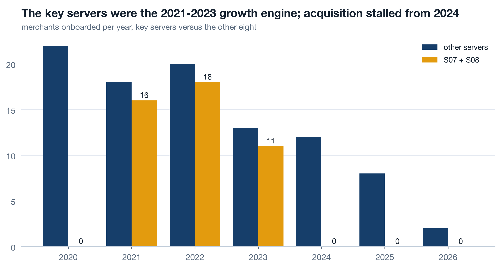
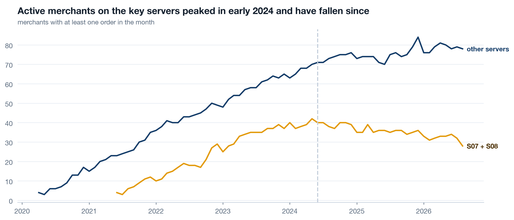
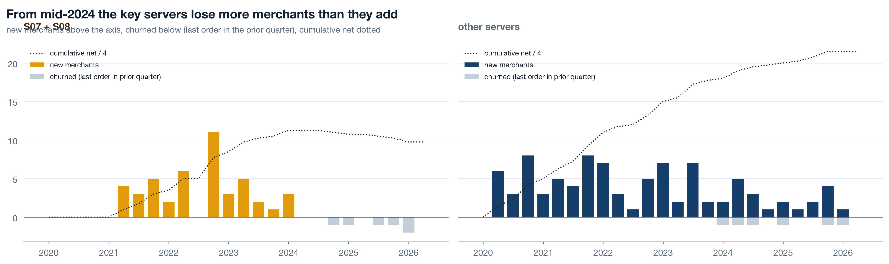
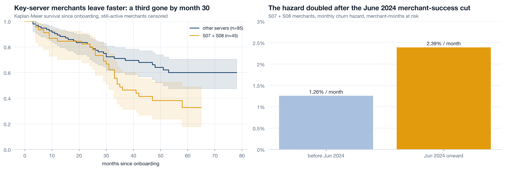
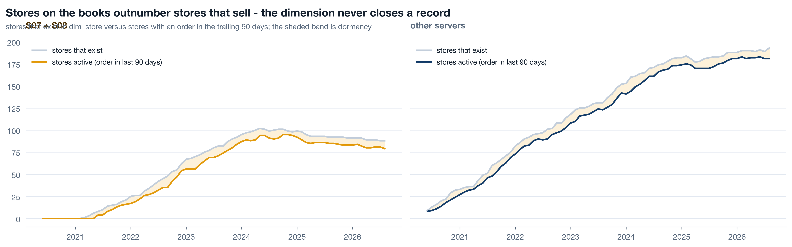
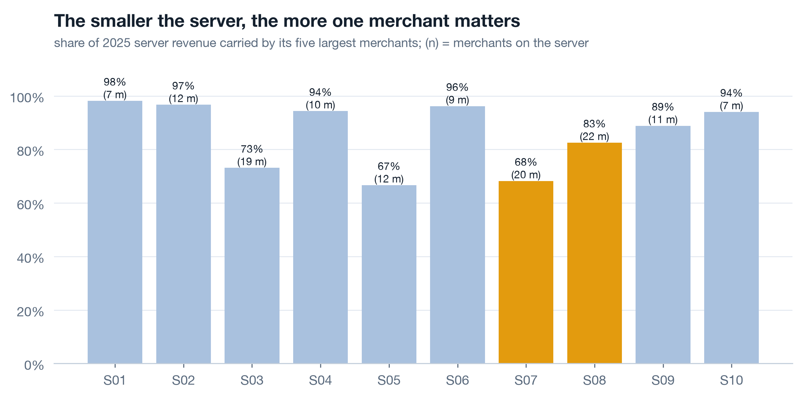
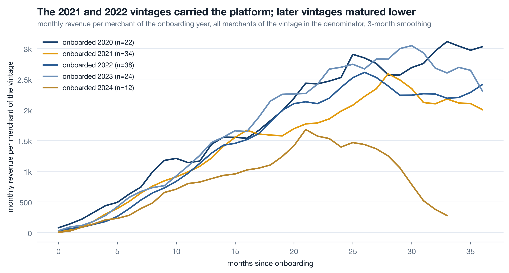
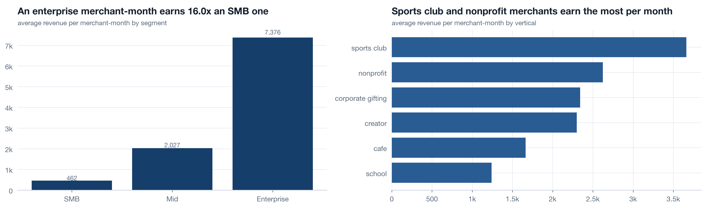
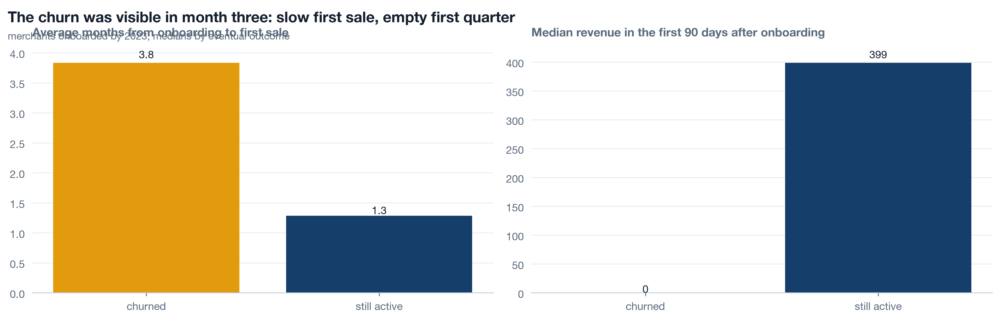

Where this session sits
a2 followed the margin and named the mechanism behind the 2024 break; a3 walked the product hierarchy and the baskets. Today climbs one level up the hierarchy: platform > server > merchant > store. A merchant is the unit the platform sells to, so merchant acquisition and merchant churn are the platform's own growth accounting. a5 will then go down to the customers those merchants brought and find that the retention drop shows up in customers of surviving and churned merchants alike - which is why today's survival numbers matter: they are one of the two decisions a5 has to tell apart. Everything runs through analysis/lib.py with dedupe=True, in notebooks/a4_merchants_and_stores.ipynb.
Acquisition, activity, survival 15 min live
Three questions, in the order a merchant lives them: were they acquired, are they transacting, have they left. Each has a trap. Acquisition counts look like health when they are only presence. Activity counts need a definition, and it has to be the same one every month. Survival is where most teams go wrong: they either chart the merchants who are still here, which flatters, or they drop the ones still here from a lifetime average, which understates. The merchants who have not left yet are not missing data. They are censored, and the estimator has to know it.
Live Merchants onboarded per year 3 min▶
The merchant dimension carries onboard_month, server_id and, for 59 of 140, a churn_month. Group the onboardings by year and by server group and the platform's growth story is one bar chart long.

S07 and S08 launched in 2021 and took 16, 18 and 11 merchants in their first three years. Since 2024: zero. The other servers slowed too, from 22 in 2020 to 8 in 2025. The a1 coverage heatmap showed sparse onboarding months for 2024-2026 and called it presence, not health. This is the chart that makes the judgement: it is not a broken table, it is a stalled funnel. What the data cannot say is how many merchants were pitched or trialled before onboarding - there is no acquisition funnel table at all, and that goes on the c3 collection list.
Live Active merchants and growth accounting 5 min▶
A merchant is active in a month if any of its stores transacted that month. That is a definition you write down once and never vary, because an active count with a moving definition is two charts pretending to be one. The growth-accounting identity for merchants reads the same as for customers: actives this quarter = new + retained, and churned sits below the axis.

The churn rule matters more than it looks. A merchant whose last order fell in 2024Q2 is counted as churned in 2024Q3, the first quarter with no order. Count it in the quarter of the last order instead and every churn moves one quarter earlier, which puts the merchant exodus before the June cut instead of after it. The rule is a sentence in the chart subtitle, and the growth-accounting range stops at 2026Q2 because the quarter still running cannot yet tell a churned merchant from a quiet one.

Live Kaplan-Meier, because the survivors are still here 7 min▶
81 of 140 merchants have no churn month. Their lifetimes are not known; they are at least as long as the time since onboarding. The Kaplan-Meier estimator uses exactly that information: at each month, it asks what share of the merchants still at risk left, and multiplies the survival down. A merchant still here contributes to the denominator up to today and then stops, without pretending to have left or to be immortal. In lifelines the duration is months from onboarding to churn month or to today, and event is 1 only when the churn was observed.

The right panel is 956 merchant-months at risk before June 2024 with 12 exits, against 670 merchant-months after with 16. The hazard is not a survival rate and not a churn count; it is the chance a merchant at risk leaves in a given month, and it lets a period with fewer merchants be compared with a period that had more. 1.26 to 2.39 percent per month is the merchant-side echo of the decision a2 priced on the margin side. The store dormancy in Part 2 is the earlier, quieter version of the same signal.
Self-study Why a revenue chart of surviving merchants flatters 3 min▶
Take the merchants active today and plot their revenue back to 2020. The line rises beautifully, because every merchant in it is, by construction, one that made it. The 59 that left are not on the chart, and neither is the revenue they took with them. This is survivorship bias, and it is the default shape of any "our customers" chart built from a current customer list. Three habits prevent it:
- Build merchant-level series from the transaction fact, never from a filtered dimension. A merchant who churned in 2023 still has 2021 and 2022 revenue, and it belongs on the 2021 and 2022 chart.
- Put the whole vintage in the denominator. The vintage curves in Part 2 divide by every merchant onboarded that year, alive or not, so a churn shows as a decline in the curve instead of a disappearance from it.
- When someone shows a per-merchant average rising, ask how many merchants are in the average this year against last year. A shrinking denominator of survivors makes any per-unit metric climb.
Stores that exist versus stores that sell 12 min live
A dimension table records that a store was created. It does not record that anyone stopped using it, because closing a record is a chore nobody owns. About 65 percent of Printwell's dead stores are still open on the books. So the "number of stores" any dashboard shows is a count of rows nobody deleted, and the gap between that and the stores that transacted recently is the earliest merchant-churn signal in the data.
Live Define active 4 min▶
Active store: at least one order in the trailing 90 days. Ninety days because the median customer takes 118 days between first and second order (a5), so a store with no order in a quarter is quiet, not merely between customers. The definition is applied month by month against the stores whose dimension row says they exist that month, and the dormant share is one minus active over existing.

Dormant share on the key servers: 8.7 percent in December 2023, 4.1 in December 2024, 8.8 in December 2025 and 10.2 by August 2026, against 6.6, 4.9, 3.7 and 6.2 on the other servers. The December 2024 dip on both groups is seasonal - a quarter with a December in it has few quiet stores. The trend after it is not. A store that stops selling is a merchant that is disengaging, months before the merchant's last order becomes a churn in the growth accounting.
Live Concentration: who carries each server 4 min▶
Revenue per server hides how many merchants it rests on. The Herfindahl index (sum of squared revenue shares, scaled to 10,000) and the plainer top-5 merchant share say the same thing in two registers: high concentration is fragility, because one merchant leaving becomes a server-level event.

In 2025, S03 spreads its revenue across 19 merchants and its top five carry 73.1 percent; S01 has 7 merchants and its top five carry 98.2 percent. A server with five merchants is a portfolio of five bets. The full table by year is in reports/a4_concentration.csv; watch the HHI trend, because concentration that rises while merchant count is flat means the smaller merchants are fading, which is the dormancy story told in a different unit.
Self-study Vintage curves 4 min▶
A vintage is every merchant onboarded in the same year. Revenue per merchant of the vintage, by months since onboarding, with all of the vintage in the denominator - alive or not - is the merchant version of a cohort curve. Churn shows as decline, not disappearance. The 2021 and 2022 vintages carried the platform; 2023 onward matured lower. Read alongside the acquisition chart, this says the key servers not only stopped acquiring, the last merchants they did acquire earned less per head than the ones before.

Segment and vertical tell you where a merchant-month earns most: an Enterprise merchant-month averages 7,376 against 2,027 for Mid and 462 for SMB, and sports clubs (3,661) out-earn schools (1,241) three to one. This is the cut that turns "acquire more merchants" into "acquire merchants in the segments and verticals where a merchant-month is worth most", which is the c3 acquisition recommendation.

The churn was visible in month three 8 min live
Everything so far measures the funeral: the churn month, the hazard, the dormancy that precedes it by a few months. A merchant-success team cannot act on a funeral. It can act on a list of merchants who look, today, like the ones who later left. So the question is whether a merchant's first quarter predicts its fate - and on this data, it does.
Live Leading indicators 8 min▶
Two readiness signals from the first quarter after onboarding: months from onboarding to first sale, and revenue in the first 90 days. Measured only on merchants onboarded by 2023, so every one of them has had at least two and a half years to churn or not - a 2025 merchant who has not churned yet is not evidence of anything.

54 merchants churned, 63 are still active. The ones who churned took 3.8 months on average to their first sale against 1.3 for the survivors, and their median first-90-day revenue was 0 - more than half of the eventual churners sold nothing in their first quarter. The survivors' median was 399. One merchant onboarded by 2023 never recorded a sale at all, and it churned. A merchant who has not sold by day 90 is not a new merchant; it is a churn in progress, and a success manager can call it this week rather than write it off in 2027.
Self-study What to collect on merchants 4 min▶
Today's analysis worked with two dimension tables and the order fact. It could have worked with more. Two families of merchant data are missing, and each is a c3 recommendation with an owner and a date.
| Missing | What it would answer | Owner | First use |
|---|---|---|---|
| Acquisition funnel: merchants pitched, trialled, onboarded, by server and month | Whether 2024's zero onboardings on S07 and S08 is a demand problem or a sales-effort problem | Merchant sales | Funnel conversion per server per quarter |
| Merchant health events: platform logins, catalogue edits, campaign launches, support tickets | Earlier and richer readiness indicators than time to first sale; a disengagement signal weeks before dormancy | Merchant success | Weekly at-risk list |
| Store status as events (opened, paused, closed), not an overwritable field | A trustworthy store count without recomputing activity from orders | Platform data | Store dashboard |
| Merchant-success coverage: which merchants had a named manager, when | Whether the June 2024 cut removed coverage from the merchants who then churned | Merchant success | Hazard by coverage status |
The last row is the one that would settle the two-decision question a5 opens: the hazard doubled after the team was cut, and a coverage table would say whether the merchants who left were the ones who lost their manager.
Rebuild the merchant notebook ★ 20 min · everyone builds
Open notebooks/a4_merchants_and_stores.ipynb, run it once, then rebuild each section against the shared reader. Load with dedupe=True; the a1 duplicate rule is already in lib. The data is seeded, so your hazard reads 1.26 and 2.39 like the page.
Merchant frame. Load dims, build onboard, year, is_key. Print merchants, churned, stores and the tier counts. Cut transactions to complete months only.
Acquisition. Onboardings by year and server group as a grouped bar. Write the finding in the title, not the axis label.
Growth accounting. First and last order month per merchant. New this quarter, churned this quarter as last order in the prior quarter. Stop at the last complete quarter.
Survival. Duration to churn or to today, event flag, KaplanMeierFitter per server group. Then the merchant-month table and the hazard split at 2024-06. Save the hazard to reports/.
Dormancy. Existing stores per month from the dimension, active stores from orders in the trailing three months. Two lines, one band, per server group. Print the dormant share at four December-ish checkpoints.
Concentration and vintages. HHI and top-5 share per server per year to reports/. Vintage curves with the full vintage in the denominator.
Leading indicators. Months to first sale and first-90-day revenue by outcome, merchants onboarded by 2023 only. Save the table: a5 folds it into canon.json.
python3 analysis/nbgen.py notebooks/src/a4_merchants_and_stores.py. A failed run leaves no notebook behind, so a stale passing notebook can never masquerade as a fresh one. And check the censoring the cheap way: count merchants with event == 0 and confirm it equals 140 minus 59. If it does not, some survivor has been silently given a churn date.
Try it yourself - this week ◐ 45 min
- Take one customer or account list you report on and compute its size two ways: rows in the dimension, and units with a transaction in the last 90 days. Report the gap to whoever owns the dashboard, with the date.
- Fit a Kaplan-Meier curve to your accounts with lifelines, censoring the ones still active at today. Compare the median survival it gives with the mean tenure of accounts that have already left. Write one sentence on why they differ.
- Pick two first-quarter behaviours of your own accounts (time to first order, first-90-day value, first login, anything measurable early) and split mature accounts by eventual outcome. If neither behaviour separates the groups, that is a finding too - write it down before someone assumes it does.
What this session draws on
Merchant analytics is standard survival and portfolio craft rather than a certified syllabus. The working core drawn on here:
Three questions before you go 🎯 ◐ 90 seconds
1 · You compute average merchant lifetime as the mean months from onboarding to churn, over the 59 merchants who churned. What is wrong with the number?
A merchant still trading is not missing; it is censored, and its lifetime is known to be at least its tenure so far. Dropping the censored merchants keeps only the ones who left, and in a growing base those skew young. The Kaplan-Meier estimator keeps every merchant at risk in the denominator up to the month it leaves or today, whichever comes first.
2 · The store dashboard says S07 has more stores than ever. The order data says fewer stores on S07 transacted last quarter than a year ago. Which is right?
Existence is a row nobody deleted; activity is an order with a date. Report existing, active and the gap every month. The dimension is not wrong about existence, it is silent about activity, and about 65 percent of dead stores are still open on the books.
3 · Merchants who later churned took 3.8 months to first sale against 1.3 for survivors. What kind of metric is time to first sale, and what does the success team do with it?
Churn month and hazard describe what already happened; months to first sale is known within a quarter of onboarding and, on this data, separates the merchants who stayed from the ones who left. That makes it a leading indicator - provided it was measured here, on merchants mature enough to have churned, not borrowed from another business's playbook.